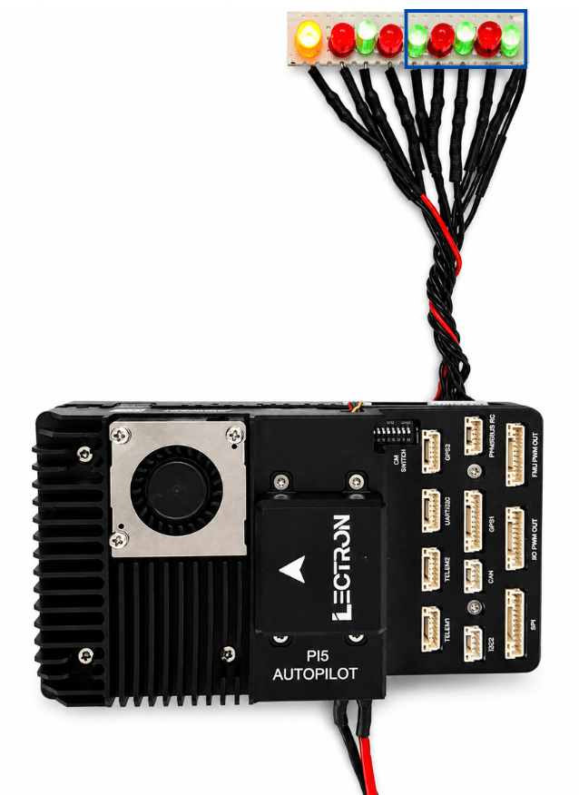
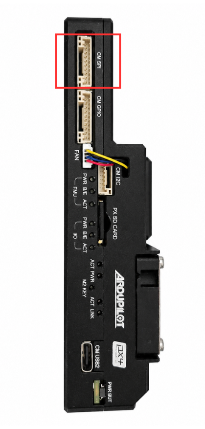

CM5 PWM¶
PWM Channels — Hardware & Software Guide
| Platform | Raspberry Pi CM5 |
| OS | Ubuntu 24.04 LTS |
| Connector | SM10B-GHS (10-pin) |
Hardware Overview¶
The CM SPI/PWM port is a 10-pin JST GH connector (SM10B-GHS) on the Lectron PI5 Autopilot board. Pins 6–9 expose four software PWM channels from the Raspberry Pi CM5, driven via GPIO12–GPIO15. Pin 1 provides 5 V power and pin 10 is ground. Pins 2–5 carry the SPI1 bus, which is documented separately.
Board Photos¶
The images below show the LED test setup connected to the PWM pins, and the connector location on the board side panel.


Pin Assignment¶
The four PWM pins are the focus of this document. SPI pins share the same connector but are documented separately.
| Pin | Signal | Voltage | GPIO | Notes |
|---|---|---|---|---|
| 1 | SYSTEM 5V | +5V | — | Board supply voltage |
| 2 | CM5 SPI1 SCLK | +3.3V | — | SPI1 clock (not covered here) |
| 3 | CM5 SPI1 SIO1 | +3.3V | — | SPI1 MISO (not covered here) |
| 4 | CM5 SPI1 SIO0 | +3.3V | — | SPI1 MOSI (not covered here) |
| 5 | CM5 SPI1 CS1 | +3.3V | — | SPI1 chip select (not covered here) |
| 6 | CM5 PWM CH1 | +3.3V | GPIO12 | PWM channel 1 |
| 7 | CM5 PWM CH2 | +3.3V | GPIO13 | PWM channel 2 |
| 8 | CM5 PWM CH3 | +3.3V | GPIO14 | PWM channel 3 |
| 9 | CM5 PWM CH4 | +3.3V | GPIO15 | PWM channel 4 |
| 10 | GROUND | GND | — | Common ground reference |
PWM on Ubuntu 24.04 / CM5¶
Hardware PWM Limitation¶
Software PWM via the Linux GPIO ioctl interface (gpiochip4) is the recommended approach and works reliably on all four PWM pins.
Verify GPIO Lines¶
Confirm GPIO12–15 are available on gpiochip4:
$ sudo gpioinfo gpiochip4 | grep -E 'GPIO1[2-5]'
line 12: "GPIO12" unused input active-high
line 13: "GPIO13" unused input active-high
line 14: "GPIO14" unused input active-high
line 15: "GPIO15" unused input active-high
Quick Test (Command Line)¶
Before running code, verify the pins work with a simple high/low test:
# Drive all 4 PWM pins HIGH for 3 seconds
sudo gpioset --mode=time -s 3 gpiochip4 12=1 13=1 14=1 15=1
# Turn all off
sudo gpioset --mode=time -s 1 gpiochip4 12=0 13=0 14=0 15=0
Software PWM — C Example¶
The program below implements software PWM using the Linux GPIO ioctl interface. It accepts a GPIO pin number as a command-line argument and cycles through 10%, 50%, and 90% brightness for 3 seconds each.
Build & Run¶
gcc -o pwm_test pwm_test.c
# Run on GPIO12 (PWM CH1)
sudo ./pwm_test 12
# Run on GPIO13 (PWM CH2)
sudo ./pwm_test 13
Expected Output¶
=== CM PWM LED Test (GPIO12) ===
[1] 10% brightness...
[2] 50% brightness...
[3] 90% brightness...
Done.
Source Code¶
#include <stdio.h>
#include <stdlib.h>
#include <unistd.h>
#include <fcntl.h>
#include <string.h>
#include <errno.h>
#include <linux/gpio.h>
#include <sys/ioctl.h>
#define GPIO_CHIP "/dev/gpiochip4"
#define PWM_PERIOD_US 1000 // 1 kHz
void set_duty(int fd, struct gpiohandle_data *data,
int duty_percent, int duration_ms) {
int on_time = PWM_PERIOD_US * duty_percent / 100;
int off_time = PWM_PERIOD_US - on_time;
int cycles = (duration_ms * 1000) / PWM_PERIOD_US;
for (int i = 0; i < cycles; i++) {
data->values[0] = 1;
ioctl(fd, GPIOHANDLE_SET_LINE_VALUES_IOCTL, data);
usleep(on_time);
data->values[0] = 0;
ioctl(fd, GPIOHANDLE_SET_LINE_VALUES_IOCTL, data);
usleep(off_time);
}
}
int main(int argc, char *argv[]) {
if (argc != 2) {
fprintf(stderr, "Usage: %s <gpio_pin>\n", argv[0]);
fprintf(stderr, "Example: sudo ./pwm_test 12\n");
return 1;
}
int gpio_pin = atoi(argv[1]);
if (gpio_pin < 0 || gpio_pin > 53) {
fprintf(stderr, "Error: invalid GPIO pin %d\n", gpio_pin);
return 1;
}
int chip_fd;
struct gpiohandle_request req;
struct gpiohandle_data data;
chip_fd = open(GPIO_CHIP, O_RDONLY);
if (chip_fd < 0) { perror("open chip"); return 1; }
memset(&req, 0, sizeof(req));
req.lineoffsets[0] = gpio_pin;
req.lines = 1;
req.flags = GPIOHANDLE_REQUEST_OUTPUT;
strcpy(req.consumer_label, "pwm_test");
if (ioctl(chip_fd, GPIO_GET_LINEHANDLE_IOCTL, &req) < 0) {
perror("get handle"); close(chip_fd); return 1;
}
memset(&data, 0, sizeof(data));
printf("=== CM PWM LED Test (GPIO%d) ===\n\n", gpio_pin);
printf("[1] 10%% brightness...\n");
set_duty(req.fd, &data, 10, 3000);
printf("[2] 50%% brightness...\n");
set_duty(req.fd, &data, 50, 3000);
printf("[3] 90%% brightness...\n");
set_duty(req.fd, &data, 90, 3000);
printf("\nDone.\n");
data.values[0] = 0;
ioctl(req.fd, GPIOHANDLE_SET_LINE_VALUES_IOCTL, &data);
close(req.fd);
close(chip_fd);
return 0;
}
How Software PWM Works¶
Software PWM rapidly toggles a GPIO pin HIGH and LOW to simulate an analog output level. The ratio of ON time to the total period is called the duty cycle.
| Duty Cycle | ON Time | OFF Time | Effect |
|---|---|---|---|
| 0% | 0 µs | 1000 µs | LED OFF |
| 10% | 100 µs | 900 µs | Very dim |
| 50% | 500 µs | 500 µs | Half brightness |
| 90% | 900 µs | 100 µs | Near full brightness |
| 100% | 1000 µs | 0 µs | LED fully ON |
Timing
Period = 1000 µs (1 kHz). All timing values are based on the PWM_PERIOD_US constant in the source code.